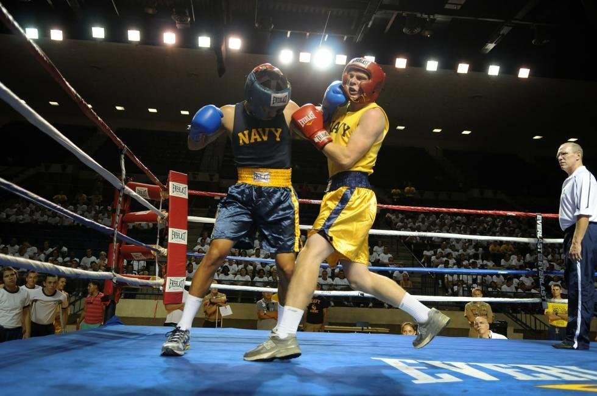

Equipamiento adecuado para practicar boxeo
Además de los elementos básicos, el boxeador debe considerar el mantenimiento y la calidad de su equipo. Unos guantes deteriorados pueden afectar la técnica y la seguridad, mientras que unas vendas en mal estado dejan de cumplir su función protectora. Invertir en equipamiento de buena calidad garantiza entrenamientos más duraderos y confiables.
La higiene también es un aspecto clave. Mantener los guantes aireados, lavar las vendas con regularidad y limpiar el casco ayuda a prevenir malos olores y problemas de salud, como infecciones en la piel. Estos cuidados forman parte de la disciplina que todo boxeador debe mantener dentro y fuera del ring.
Por otro lado, el equipamiento no solo cumple una función práctica, sino también psicológica. Sentirse cómodo, seguro y profesional al usar el equipo adecuado aumenta la motivación y la confianza del atleta. Esto influye de manera positiva en su rendimiento durante los entrenamientos y las competencias.
Finalmente, elegir el equipamiento adecuado también depende de los objetivos del boxeador. No es lo mismo un principiante que busca mejorar su condición física, que un competidor que entrena de forma intensiva para combates oficiales. En todos los casos, contar con los implementos correctos es una inversión en seguridad, rendimiento y progreso deportivo.
El equipamiento adecuado es fundamental para practicar boxeo de manera segura, cómoda y con un buen rendimiento. Cada elemento cumple una función esencial:
- Guantes de boxeo: Protegen las manos y al compañero de entrenamiento. Se recomienda elegir el peso adecuado según el nivel.
- Vendas: Brindan soporte a muñecas y nudillos, reduciendo el riesgo de lesiones.
- Protector bucal: Indispensable para cuidar dientes y mandíbula.
- Casco de protección: Muy útil en entrenamientos y sparrings para amortiguar impactos en cabeza y rostro.
- Zapatos de boxeo: Ligeros y con suela antideslizante, permiten desplazamientos rápidos y seguros.
- Ropa deportiva: Transpirable, cómoda y diseñada para entrenamientos de alta intensidad.
- Accesorios opcionales: Saco de boxeo, peras de velocidad y cuerda para saltar, ideales para mejorar técnica, resistencia y coordinación.
En conjunto, esta equipación no solo protege al boxeador, sino que también le permite entrenar con mayor confianza y eficiencia.
Para más información sobre el equipamiento necesario, puedes ver el siguiente video: